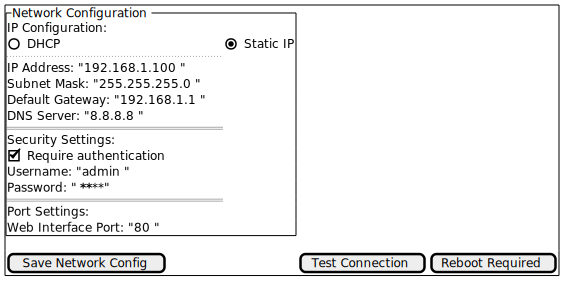
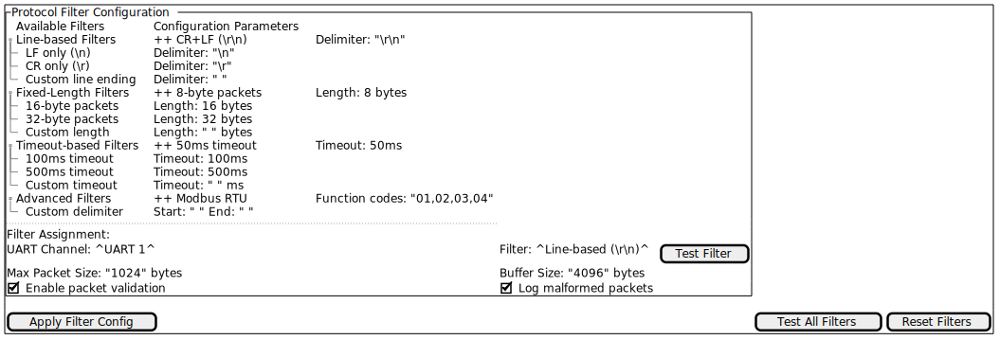
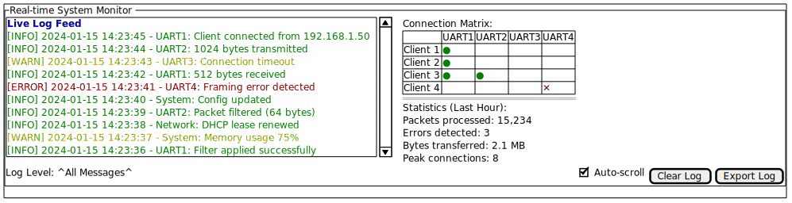
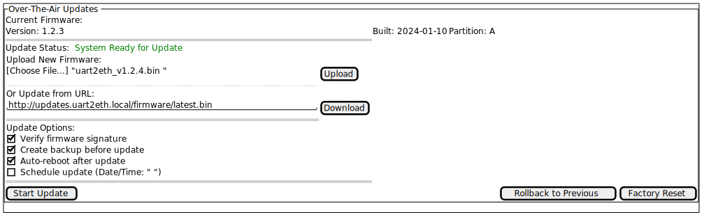

Input stream: "sensor1=23.5\r\ntemperature=18.2\r\nhumidity=65\r\n"
Delimiter: "\r\n"
Output packets:
- "sensor1=23.5"
- "temperature=18.2"
- "humidity=65"
Cross-cutting Concepts
Protocol Filtering
Protocol filtering provides a configurable mechanism to determine packet boundaries in UART data streams. The system implements pluggable filters that analyze incoming byte streams to identify complete data units for efficient TCP transmission.
Packet Determination Algorithm
The protocol filter operates on incoming UART data to identify discrete packets using configurable delimiters and patterns:
Basic Line-Based Filter Example
Filter Types
The system supports multiple filter implementations:
-
Line-based filters: Use configurable line terminators (\r\n, \n, \r)
-
Fixed-length filters: Extract packets of predetermined byte count
-
Delimiter-based filters: Use custom byte sequences as packet boundaries
-
Timeout-based filters: Form packets after configurable idle periods
Configuration Parameters
Each UART channel supports independent filter configuration:
-
Filter type selection
-
Delimiter specification (for delimiter-based filters)
-
Packet length (for fixed-length filters)
-
Timeout values (for timeout-based filters)
-
Maximum packet size limits
Web Management Interface
The web management interface provides system configuration and monitoring through a responsive web UI.
Main Interface Mockup

Network Configuration Panel

Protocol Filter Configuration

System Monitoring Dashboard

OTA Update Interface

Error Handling Strategy
Hierarchical Error Management
The system implements a three-tier error handling approach:
Application Layer Errors * Protocol parsing failures * Configuration validation errors * User authentication failures
Communication Layer Errors * UART framing/parity errors * TCP connection failures * Network timeout conditions
System Layer Errors * Memory allocation failures * Hardware malfunction detection * Critical system resource exhaustion
Error Recovery Mechanisms
Each error category implements specific recovery procedures:
-
Graceful degradation: Non-critical failures maintain partial functionality
-
Automatic retry: Transient errors trigger configurable retry attempts
-
Failover switching: Critical component failures activate backup systems
-
User notification: All error conditions generate appropriate user feedback
Security Architecture
Authentication and Authorization
Multi-level Access Control * Administrator: Full system configuration access * Operator: Monitoring and basic configuration changes * Guest: Read-only monitoring access
Session Management * Token-based authentication with configurable expiry * Automatic session timeout after inactivity * Concurrent session limits per user role
Data Protection
Network Security * Configurable firewall rules per UART channel * Rate limiting for TCP connections * Intrusion detection for unusual traffic patterns
Configuration Management
Persistent Storage
Configuration data persistence uses JSON format with schema validation:
-
System settings (network, users, security)
-
UART channel configurations (baud rate, protocol filters)
-
Performance tuning parameters
-
Historical statistics and logs
Backup and Restore
Automatic Backups * Daily configuration snapshots * Pre-update system state capture * Critical setting change tracking
Manual Operations * Configuration export/import via web interface * Factory reset with selective data preservation * Remote backup to external storage systems
Performance Optimization
Buffer Management
Dynamic Buffer Allocation * Adaptive buffer sizes based on data flow patterns * Memory pool management for high-frequency allocations * Garbage collection for unused buffer segments
Flow Control * Back-pressure mechanisms for overloaded channels * Priority queuing for different data types * Load balancing across multiple TCP connections
Monitoring and Metrics
Real-time Performance Tracking * Throughput measurements per UART channel * Latency monitoring for end-to-end data flow * Resource utilization (CPU, memory, network)
Historical Analysis * Trend analysis for capacity planning * Performance regression detection * Automated alerting for threshold violations
Feedback
Was this page helpful?
Glad to hear it! Please tell us how we can improve.
Sorry to hear that. Please tell us how we can improve.